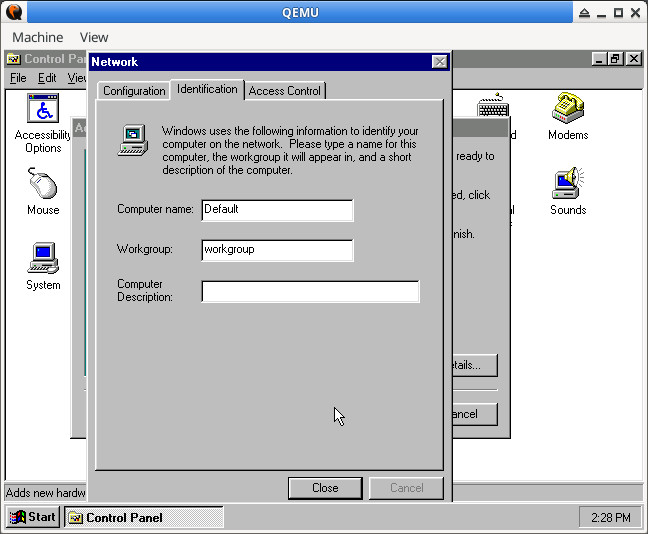
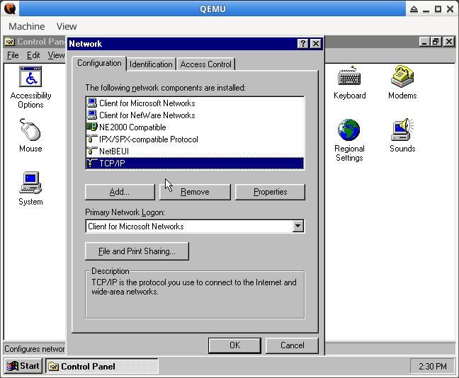
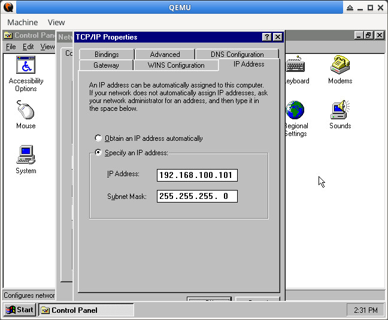
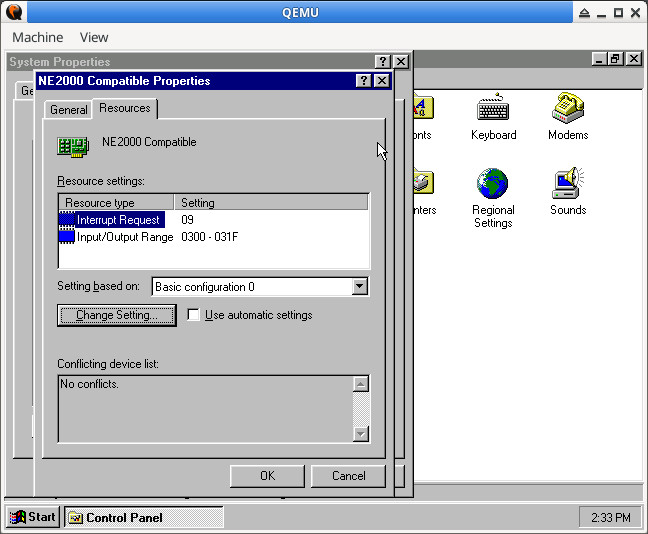
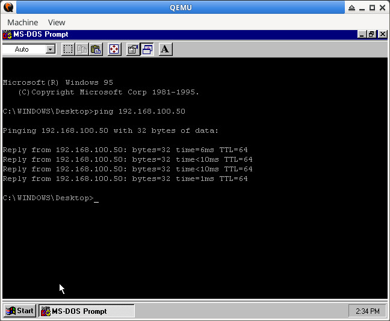
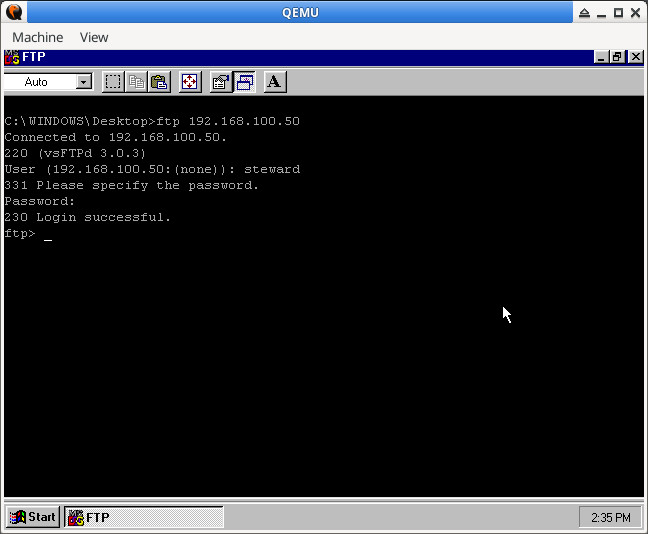

參考資訊：
https://wiki.qemu.org/Documentation/GuestOperatingSystems/Windows95
https://alberand.com/host-only-networking-set-up-for-qemu-hypervisor.html
設定HOST網卡
$ sudo ip link add br0 type bridge $ sudo ip addr flush dev br0 $ sudo ip addr add 192.168.100.50/24 brd 192.168.100.255 dev br0 $ sudo ip tuntap add mode tap user $(whoami) $ sudo ip tuntap show $ sudo ip link set tap0 master br0 $ sudo ip link set dev br0 up $ sudo ip link set dev tap0 up $ sudo dnsmasq --interface=br0 --bind-interfaces --dhcp-range=192.168.100.50,192.168.100.254
QEMU
$ qemu-system-i386 -m 128 win95.qcow2 -fdb floppy.img -vga cirrus -device ne2k_isa,netdev=win95net0 -netdev tap,id=win95net0,ifname=tap0,script=no,downscript=no -cdrom cdrom.iso
workgroup





